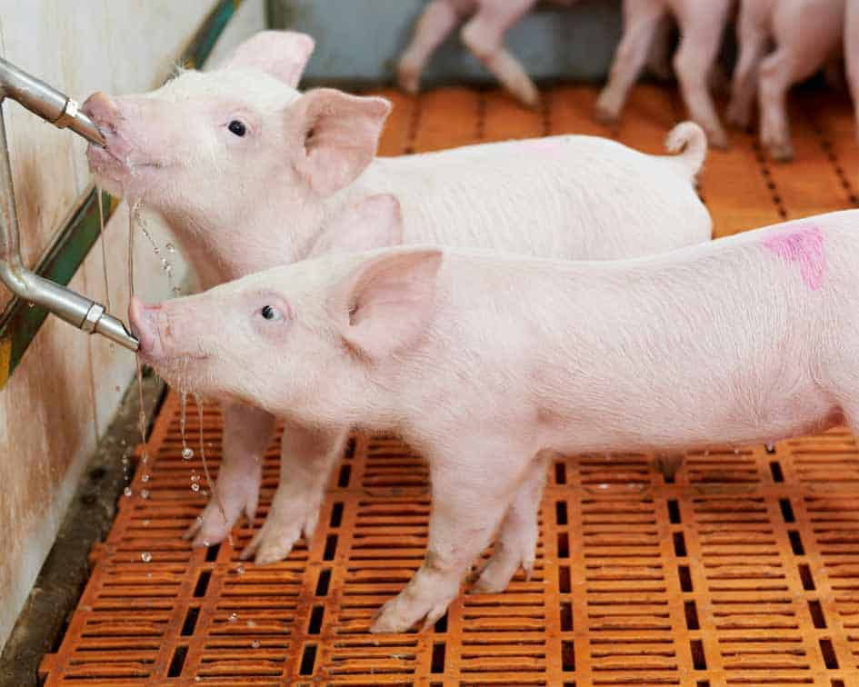
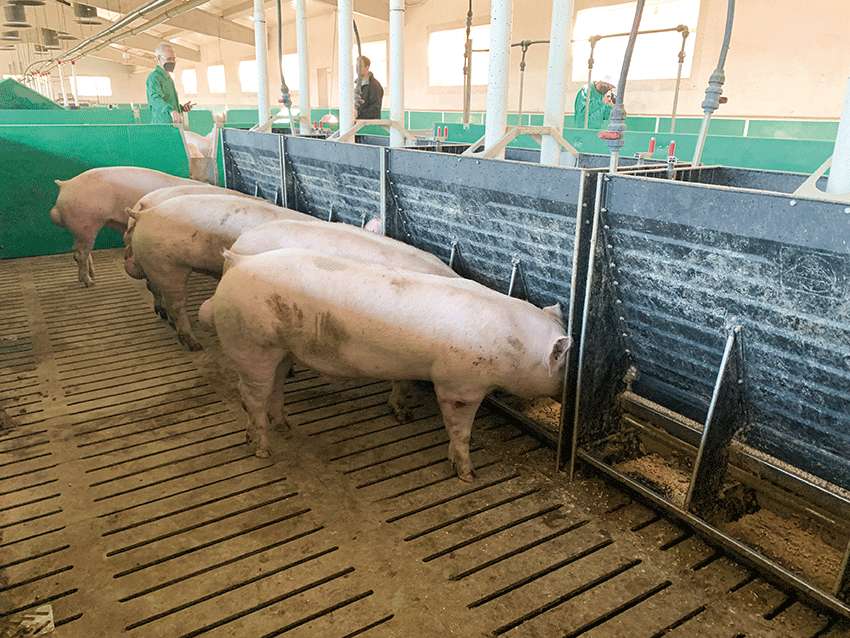
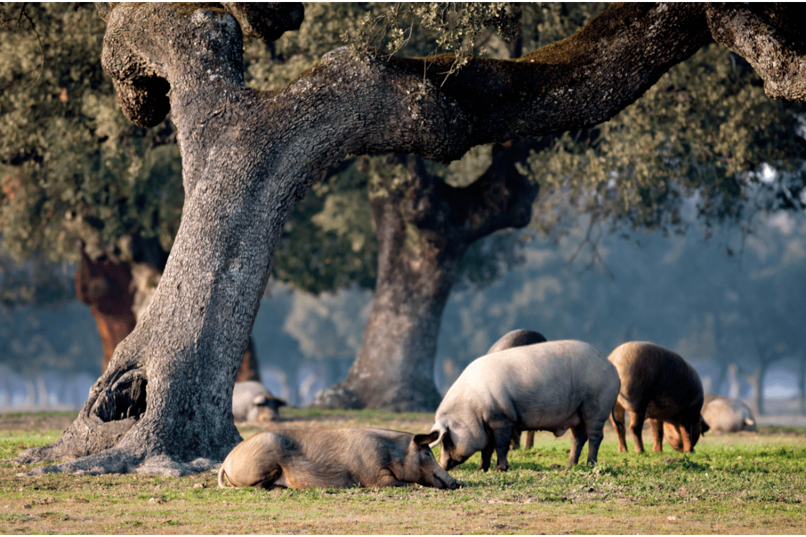

Gestación
La gestación de la cerda ibérica dura tres meses, tres semanas y tres días, tras los cuales nacen camadas de unos ocho lechones que pesan entre 700 y 1000 gramos. Los lechones de la raza lampiña pueden pesar incluso menos. Durante la lactancia, estos pequeños cerdos se denominan lechones, y al finalizar esta etapa alcanzan un peso mínimo de 20 kilos, momento en el que dejan de ser considerados como tales.

Fase de recría
Tras el destete, comienza la fase de recría, en la que los cerdos ibéricos son alimentados con cereales, frutos secos y piensos ricos en estos ingredientes. Esta etapa tiene como objetivo fortalecer su estructura muscular y ósea para prepararlos para la vida en la dehesa. Durante la recría, los cerdos engordan hasta alcanzar aproximadamente 30 kilos, consolidando su desarrollo físico inicial.
Fase de engorde
En la etapa de los primales, los cerdos, ya con más de 50 kilos y alrededor de siete meses de edad, se preparan para la montanera. Los cerdos lampiños tardan más en llegar a esta fase, entrando a los 17 o 18 meses, mientras que los cerdos cruzados lo hacen a los 10 meses debido a un mejor índice de conversión. En esta etapa, comienzan a consumir hierbas de la dehesa, reduciendo gradualmente el pienso en favor de pastos naturales compuestos por trigo, cebada, avena y soja, hasta alcanzar más de 100 kilos.
Montanera
La montanera es la fase final de engorde, donde los cerdos ibéricos pastan libremente en la dehesa, alimentándose principalmente de bellotas, lo que aporta altos niveles d ácido oleico al jamón. La densidad de animales, controlada en unas 0,70 cabezas por hectárea, y la climatología, que afecta la producción de bellotas, son factores clave para la calidad del producto final. Durante esta etapa, los cerdos ganan cerca del 50% de su peso final, y todo el proceso, desde el nacimiento hasta el sacrificio, se registra detalladamente para garantizar la trazabilidad.
